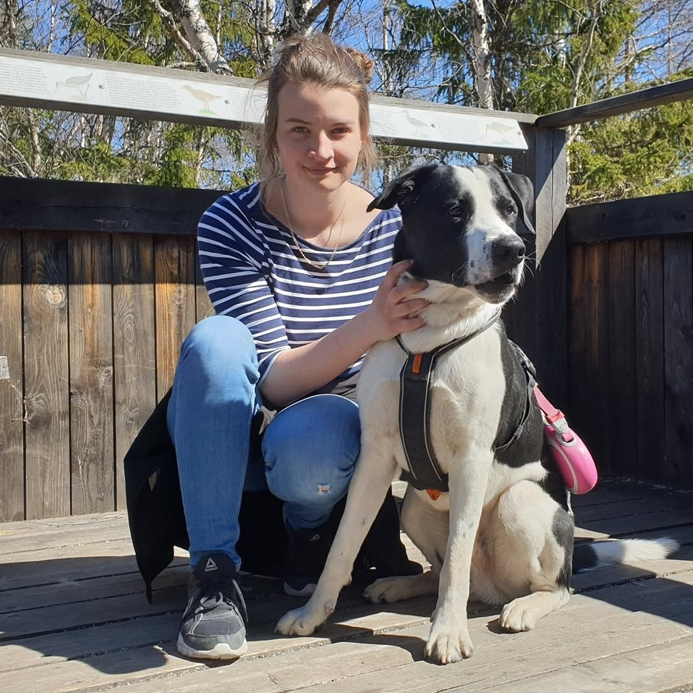

Lite kort om varför jag vill bli webbutvecklare
Jag har börjat på Mittuniversitetet och studerar till webbutvecklare främst för att jag tycker det är kul samt att jag alltid har känt att jag måste lära mig mer om programmering och webbutveckling. Jag vill gärna utvecklas och se vart det leder, ifall jag byter yrke eller om det bara är för en hobby. Jag har alltid varit intresserad av spel, datorer och tyckt att det är fascinerande med programmering och webbutveckling. Jag ser verkligen fram emot att lära mig mer om webbutveckling och förbättra mina färdigheter inom området.